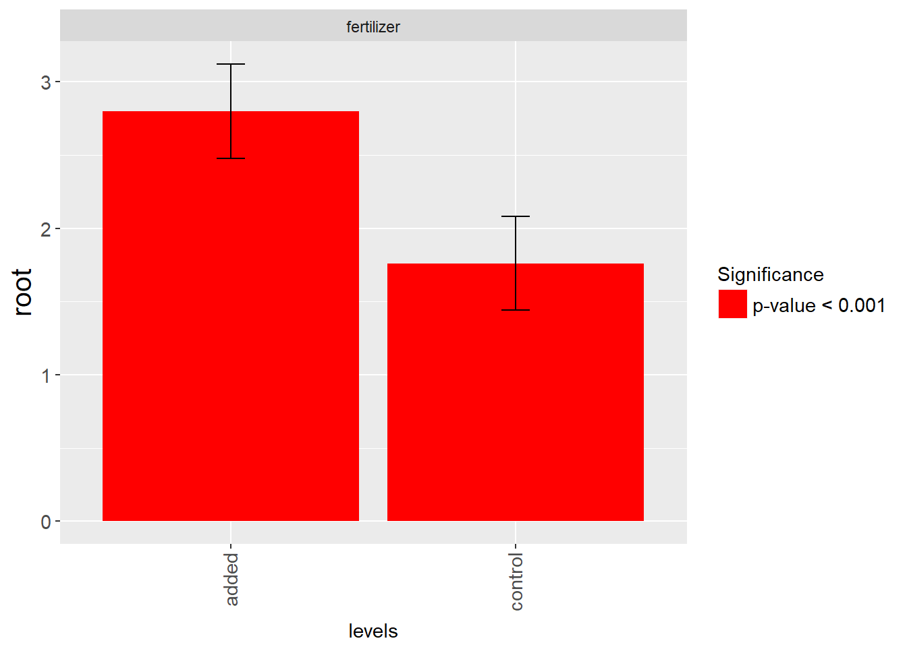

For this lecture we would need to install and load several packages:
install.packages(c("nlme", "lme4", "lmerTest", "ggplot2", simr", "mvtnorm", "tidyverse", "car", "lsmeans", "multcompView", "sp", "gstat", "moments", "RLRsim"))After installation, we can load all packages:
library(lsmeans)
library(multcompView)library(nlme)
library(lme4)
library(ggplot2)
library(car)
library(mvtnorm)
library(tidyverse)
library(moments)
library(lmerTest)The data for replicating the results presented here can be found at this link, where are available the datasets used in the R Book by Michael J. Crawley:
Instead of downloading and unzip the file manually we can do everything directly from R:
getwd()## [1] "H:/Teaching_Harper/Comprehensive R Course for Inferential Statistics"This function tells us where our data will be stored. We can change our working directory using the following line:
setwd("H:/Teaching_Harper/Mixed Effect Models in R")You can copy and paste the address from windows. However, you need to change each to a /, otherwise the code will not work.
Now we need to create a new folder in our working directory where we will store the zip file and the data:
dir.create("RBookData")Now that we have a new folder we can download the zip file and save it there:
download.file(url="http://www.bio.ic.ac.uk/research/mjcraw/therbook/data/therbook.zip",
destfile="RBookData/therbook.zip")The zip file is now saved in the new folder. We just need to extract its content. To extract all files into the new folder, we just need to run the following line:
unzip(zipfile="RBookData/therbook.zip",
exdir="RBookData")here the function unzip takes two options: zipfile to indicate the zip file to decompress, and exdir to provide the path where to extract all data. In this case, the entire content of the zip file will be extracted to the new folder RBookData. However, this file contains a lot of datasets, and since for this lecture we would only need access to some of those we can include the option files to extract only specific files from the zip:
unzip(zipfile="RBookData/therbook.zip",
exdir="RBookData",
files=c("fertilizer.txt", "germination.txt"))If we need to extract more files we can just include a character vector for the option files.
In order to correctly apply linear modelling, which is a general term referred to models that work by computing sum of squares (e.g. ANOVA, ANCOVA and Linear Regression), our dataset need to meet several important assumptions:
Some of these assumptions are quite strict, while other can be relaxed (particularly when the sample size is large, i.e. at least 10 observations per group). Moreover, some of these assumptions can be tested, for example we can use a histogram to check whether our residuals look normal. This allows to implement ways to either change the model (non-parametric or GLM) or transform the variable.
In this lecture we will focus on the assumption of independence, which is probably a bit more difficult to test but it is also the stricter, meaning that if our data are not independent applying a linear model would be simply wrong. Clearly, if the experiment was properly designed and fully randomized, we can assume our data meet the assumption of independence. However, there are cases where we know from the start of the experiment that our data will be somehow correlated. The following are classic examples where the assumption of independence is violated:
In some cases, there are adaptations of linear modelling that can be used to analyse data that violate the assumption of independence. For example, there are established ways to analyse latin square and split plot designs. However, there are cases where we cannot fully control the design of the experiment and therefore these adapted methods cannot be used. In such cases our only option is to use mixed effect models.
In simple terms, mixed effect are models that can account for additional sources of random variation. Linear models are based on the following equation:
For simplicity this model only includes one explanatory variable \(x\). This model will fit a line with one intercept \(\beta_0\) and one slope \(\beta_1\) through the data. This equation can be divided into two components: fixed and random effects. For fixed effect we refer to those variables we are using to explain the model, such as our treatments. The other component in the equation is the random effect, represented by \(\epsilon\), which provides a level of uncertainty that it is difficult to account for in the model. For example, in agriculture we may see local differences between plants, even when treated the same way and grown on the same soil, caused by genetic differences. This is the error of the model, which cannot be minimized with our treatments.
For mixed effect models we have additional sources of random error, which are not accounted for in the treatment structure, but for which we have some data (for example we know that certain observations come from the same field or herd or farm). It may happen that data treated the same way but coming from different fields will have similar mean differences between treated and untreated (for example, the control is always 20% less than treated plants), but different mean values (for example if one field could be less fertile). If we include all data into the same set we would artificially increase the variance, and this in the model may mask the effect of treatments.
We can better understand this point with a little simulation. Let’s say we have two treatments, that provide a mean effect of 20%. Let’s simulate yield data coming from one field:
T.F1 = rnorm(n=13, mean=30, sd=5)
C.F1 = rnorm(n=13, mean=24, sd=5)On average in field 1 treatment T.F1 has 40% more yield than the control C.F1. We can run a simple t.test to check their differences:
t.test(T.F1, C.F1)##
## Welch Two Sample t-test
##
## data: T.F1 and C.F1
## t = 2.3212, df = 23.6, p-value = 0.02925
## alternative hypothesis: true difference in means is not equal to 0
## 95 percent confidence interval:
## 0.5565777 9.5582177
## sample estimates:
## mean of x mean of y
## 29.70345 24.64605The p-value should be significant (please be aware that values change every time we run the simulation, so your results may look different). Let’s now simulate data coming from another field:
T.F2 = rnorm(n=13, mean=50, sd=20)
C.F2 = rnorm(n=13, mean=40, sd=20)Again, treated plots present 40% more yield compared to the control. However, in this case we are simulating a second field generally more fertile, and so the specific values for control and treatment are higher. However, there is also more variability between plots, so the standard deviation of each treatment is larger.
Let’s try to pool values for both fields and repeat the testing:
T = append(T.F1, T.F2)
C = append(C.F1, C.F2)
t.test(T, C)##
## Welch Two Sample t-test
##
## data: T and C
## t = 1.0173, df = 48.779, p-value = 0.314
## alternative hypothesis: true difference in means is not equal to 0
## 95 percent confidence interval:
## -4.718723 14.392769
## sample estimates:
## mean of x mean of y
## 38.09620 33.25918Now there are good chances that the p-value of this second test will not be significant, since the power of this experiment is low. However, it may happen that you obtain significant results since it is a simulation and values are drawn randomly from normal distributions.
The power of this experiment is low simply because including data from the second field inflate the variance within groups, and this masks the effect of treatment.
Essentially, mixed effect models do not fit one single line to the entire dataset, but allow fitting of different lines (with either different intercepts, or different intercepts and slopes) to different part of the dataset.
In such cases the model changes to account for additional error terms:
The equation above represents a random intercept model, where \(u\) is additional error component. In essence, random intercept models fit lines with the same slope but different intercept to all the components in \(u\). A graphical representation of random intercept models is provided below:
Random Intercept Models
More complex models are random slope and intercept:
here the model with fit lines with different slope and intercept to all sub-groups. A graphical representation of such models is provided below:
Random Slope and Intercept Models
As mentioned, mixed effect models can account for violations of the assumption of independence but they still assume normality and equality of variance.
As mentioned above, for this lecture we will first load the dataset fertilizer.txt from the data provided with the R Book. Since we already extracted the txt file from the zip, we can simply load it with the following line:
fertilizer.data = read.table("RBookData/fertilizer.txt", sep="", header=T)
head(fertilizer.data)## root week plant fertilizer
## 1 1.3 2 ID1 added
## 2 3.5 4 ID1 added
## 3 7.0 6 ID1 added
## 4 8.1 8 ID1 added
## 5 10.0 10 ID1 added
## 6 2.0 2 ID2 addedIn this dataset the response (or dependent) variable is root length, column root. Only one treatment, i.e. ferilizer (either added or control), was applied to each plant (12 plants in total), which was measured at several time points (5 weeks). In this case, the violation of the assumption of independence comes from the fact that several measurements are taken from the same plant, and therefore are highly correlated.
Let’s say we ignore for the moment the fact that data were collected from the same plant, and we assume our 60 samples are completely independent. To check whether fertilizer has an effect on root length we can start by using bar charts to see any differenced between treatments:
ggplot(fertilizer.data, aes(x=fertilizer, y=root)) +
stat_summary(geom = "bar", fun.y = mean) +
stat_summary(geom = "errorbar", fun.data = mean_se, width = 0.1) +
theme_minimal()The code above plots a bar chart with error bars using ggplot2, which is a more advanced visualization library for R. The focus of this lecture is not on data visualization, so I will not comment on the code above.
Error bars are very close to overlap, which may suggest that the treatments are not significantly different. We can test that by fitting a normal linear model to see what results it would produce:
lm.mod = lm(root ~ fertilizer, data=fertilizer.data)
summary(lm.mod)##
## Call:
## lm(formula = root ~ fertilizer, data = fertilizer.data)
##
## Residuals:
## Min 1Q Median 3Q Max
## -4.5777 -2.3219 -0.2238 1.8550 5.4223
##
## Coefficients:
## Estimate Std. Error t value Pr(>|t|)
## (Intercept) 5.6777 0.5034 11.278 2.98e-16 ***
## fertilizercontrol -1.3077 0.7119 -1.837 0.0714 .
## ---
## Signif. codes: 0 '***' 0.001 '**' 0.01 '*' 0.05 '.' 0.1 ' ' 1
##
## Residual standard error: 2.757 on 58 degrees of freedom
## Multiple R-squared: 0.05497, Adjusted R-squared: 0.03868
## F-statistic: 3.374 on 1 and 58 DF, p-value: 0.07137Results suggest that adding fertilizer does not produce any real effect on plants.
Let’s try now to look more closely at the effect of plant and time with the following plot:
ggplot(fertilizer.data, aes(x = week, y = root)) +
geom_line(mapping = aes(color = plant)) +
geom_point(mapping = aes(color = plant)) +
facet_wrap(~fertilizer) +
theme_minimal()This image shows the effect of treatment weighted for week and plant. From this it is clear that adding fertilizer (left panel) produces longer roots, and the effect start to become evident after about 8 weeks.
To account for the effect of genetics we can try to fit a random intercept model. Random intercept is the simpler form of mixed effect, so usually with start with that because it is easier to fit. In fact, we need to remember that mixed effect are models that instead of fitting one line, try to fit multiple lines. This slows down the computation and may lead to optimization errors.
Let’s look at the code to fit the random intercept model:
lme.mod = lme(root ~ fertilizer, random = ~ 1|plant, data=fertilizer.data)
Anova(lme.mod)## Analysis of Deviance Table (Type II tests)
##
## Response: root
## Chisq Df Pr(>Chisq)
## fertilizer 3.3737 1 0.06625 .
## ---
## Signif. codes: 0 '***' 0.001 '**' 0.01 '*' 0.05 '.' 0.1 ' ' 1As we saw for GLM, we can use the function Anova in the package car to obtain the ANOVA table, which we can use to extract the p-value for our treatments. Then we can call the function summary to increase the amount of information we can extract from the model:
summary(lme.mod)## Linear mixed-effects model fit by REML
## Data: fertilizer.data
## AIC BIC logLik
## 297.0541 305.2959 -144.527
##
## Random effects:
## Formula: ~1 | plant
## (Intercept) Residual
## StdDev: 7.23319e-05 2.757338
##
## Fixed effects: root ~ fertilizer
## Value Std.Error DF t-value p-value
## (Intercept) 5.677667 0.5034187 48 11.278219 0.0000
## fertilizercontrol -1.307667 0.7119416 10 -1.836761 0.0961
## Correlation:
## (Intr)
## fertilizercontrol -0.707
##
## Standardized Within-Group Residuals:
## Min Q1 Med Q3 Max
## -1.66017612 -0.84208635 -0.08117733 0.67275032 1.96651023
##
## Number of Observations: 60
## Number of Groups: 12The summary output can be interpreted similarly to the output of other models. The main difference is that we have two parts: one for the random effect and one for the fixed effect. The fixed effect can be interpreted exactly as we would for linear models. We have p-values that refer to the comparison between treatment levels. In this case, from both the ANOVA table and this summary, it seems that fertilizer has no effect on root length.
For random effects, this output tells us the standard deviation around the intercept. This part of the summary table is very important because it allows us to understand how much variance we can account for by including additional terms. In this case we are accounting for a very small proportion of variance (in fact the standard deviation of the intercept is very small). This suggests that probably this model is not the best we can fit. Moreover, this output tells us the residual variance that remains after including plants. Again, this value is large, meaning that a lot of variance is not accounted for by just including plants.
With LME it is sometimes difficult to know exactly which is the optimal model to fit. According to Barr et al. (2013) it is always best to fit the most complex model our data allow. For example, if we have experiments with multiple clustering variables (e.g. different farms and different field within each farm), this means fitting additional lines to each of these new levels. Clearly this highly increases the complexity of the model, and in some cases may lead to optimization issues (we will look into this later on). Moreover, it is not necessarily true that complex models are always better. To deal with these issues many authors simply start pruning random effects until the model works, meaning that the optimization algorithm finds a solution (see Michael Frank’s Blog). This is clearly not the optimal strategy; however, we have ways to check that we are modelling our data correctly. This way we can be relatively sure we are fitting the right model.
We can formally compare LME models is by using the function anova to perform a multiple likelihood ratio test. To do so we first need to fit additional models. For example, in this case we want to fit a more complex random intercept and slope model:
lme.mod2 = lme(root ~ fertilizer, random = ~ week|plant, data=fertilizer.data)
anova(lme.mod, lme.mod2)## Model df AIC BIC logLik Test L.Ratio p-value
## lme.mod 1 4 297.0541 305.2959 -144.52704
## lme.mod2 2 6 171.0236 183.3863 -79.51181 1 vs 2 130.0305 <.0001The significant p-values indicate that the two models are different. We can then identify the better by looking at AIC, which stands for Akaike Information Criterion. The lower this parameter, the better the fit. In this case it is clear that lme.mod2 is the best.
There are two ways to estimate the random component: maximum likelihood (ML) and restricted maximum likelihood (REML). By default the function lme fits using ML. However, REML is generally recommended because it can more reliably estimate the variance components. The issue is models fitted with REML are more difficult to compare with likelihood ration tests (like the one used above). For this reason, in the phase when we need to select the best model we leave the option method on default, meaning ML. However, now that we found the optimal model we can fit it with REML to obtain more reliable estimates:
lme.mod2 = lme(root ~ fertilizer, random = ~ week|plant, data=fertilizer.data, method="REML")Once again we can use the function Anova to obtain the ANOVA table:
Anova(lme.mod2)## Analysis of Deviance Table (Type II tests)
##
## Response: root
## Chisq Df Pr(>Chisq)
## fertilizer 26.108 1 3.228e-07 ***
## ---
## Signif. codes: 0 '***' 0.001 '**' 0.01 '*' 0.05 '.' 0.1 ' ' 1which now suggests that fertilizer is highly significant to account for root length.
We can also run summary:
summary(lme.mod2)## Linear mixed-effects model fit by REML
## Data: fertilizer.data
## AIC BIC logLik
## 171.0236 183.3863 -79.51181
##
## Random effects:
## Formula: ~week | plant
## Structure: General positive-definite, Log-Cholesky parametrization
## StdDev Corr
## (Intercept) 2.8639832 (Intr)
## week 0.9369412 -0.999
## Residual 0.4966308
##
## Fixed effects: root ~ fertilizer
## Value Std.Error DF t-value p-value
## (Intercept) 2.799710 0.1438367 48 19.464500 0e+00
## fertilizercontrol -1.039383 0.2034158 10 -5.109644 5e-04
## Correlation:
## (Intr)
## fertilizercontrol -0.707
##
## Standardized Within-Group Residuals:
## Min Q1 Med Q3 Max
## -1.9928118 -0.6586834 -0.1004301 0.6949714 2.0225381
##
## Number of Observations: 60
## Number of Groups: 12Now we have more elements in the random effect part of the summary. Contrary to our first model, this now has a variance for the random intercepts (which again are fitted using different plants) and slopes (for this we are using weeks). As you can see by including random slopes we are accounting for a lot more variance in the model, particularly with the intercept. In fact, the residuals variance is now very small, this suggests the model is very accurate.
For including more random terms we can use a list, example below:
lme.mod2 = lme(root ~ fertilizer, random = list(~ week|plant, ~ week|plant), data=fertilizer.data, method="REML")Unfortunately, in this dataset there are not other variables we can include as random effects, so I just replicated the same random effect twice. However, this is the syntax you can use to include more than one, if required.
This package is the modern version of nlme, and it was developed by the same authors as nlme. It is generally a bit more complex to use, but allows to fit generalized liner mixed effect models (the mixed effect version of GLM). For this reason it would be useful to know how to fit models with lme4. By default the package lme4 does not compute p-values, to overcome this we need to also have loaded the package lmerTest. The syntax to fit the same random slope and intercept model we fitted above is the following:
lme.mod3 = lmer(root ~ fertilizer + (week|plant), data=fertilizer.data, method="REML")
summary(lme.mod3)## Linear mixed model fit by REML t-tests use Satterthwaite approximations
## to degrees of freedom [lmerMod]
## Formula: root ~ fertilizer + (week | plant)
## Data: fertilizer.data
##
## REML criterion at convergence: 159
##
## Scaled residuals:
## Min 1Q Median 3Q Max
## -1.9928 -0.6587 -0.1004 0.6950 2.0225
##
## Random effects:
## Groups Name Variance Std.Dev. Corr
## plant (Intercept) 8.2024 2.8640
## week 0.8779 0.9369 -1.00
## Residual 0.2466 0.4966
## Number of obs: 60, groups: plant, 12
##
## Fixed effects:
## Estimate Std. Error df t value Pr(>|t|)
## (Intercept) 2.7997 0.1438 10.0000 19.46 2.8e-09 ***
## fertilizercontrol -1.0394 0.2034 10.0000 -5.11 0.000458 ***
## ---
## Signif. codes: 0 '***' 0.001 '**' 0.01 '*' 0.05 '.' 0.1 ' ' 1
##
## Correlation of Fixed Effects:
## (Intr)
## frtlzrcntrl -0.707As you can see the only difference is that here we do not need to include the option random, but simply add the random part to the equation within round brackets.
I generally prefer fitting with nlme. However, in lme4 there is the possibility to change for example the optimizer, which may be useful in case we are trying to fit extremely complex models and the standard optimizer does not work. For more info on convergence issues please look at this link: lme4 convergence warnings
Interpreting the fixed effects in the model is relatively easy and can be done using the same principles we followed for previous models. In this case we have a treatment with two levels and the summary output gives us the comparison with the reference level (exactly like in a normal lm model). Since here we only have two levels, the value for the intercept would be the marginal mean of root length for fertilized plants, while the value for fertilizercontrol would be the difference compared to the marginal mean of fertilized plants. For predicted marginal means we intend the mean values of the treatment after controlling for additional sources of random variation.
We can use the function lsmeans to perform a more detailed multiple comparison. However, this only works with models fitted using the lme4 package:
lsmeans(lme.mod3, specs=c("fertilizer"), adjust="tukey", contr="cld")## Least Squares Means table:
## fertilizer Estimate Standard Error DF t-value Lower CI
## fertilizer added 1 2.800 0.144 10 19.460 2.48
## fertilizer control 2 1.760 0.144 10 12.240 1.44
## Upper CI p-value
## fertilizer added 3.12 <2e-16 ***
## fertilizer control 2.08 <2e-16 ***
## ---
## Signif. codes: 0 '***' 0.001 '**' 0.01 '*' 0.05 '.' 0.1 ' ' 1This output tells us the predicted marginal means for the treatments, computed excluding the random effects, with standard error of the estimates. The last column .group assigns different numbers to significantly different contrasts.
It is also possible to plot these results, to make the interpretation even clearer:
lsmeans(lme.mod3, specs=c("fertilizer"), adjust="tukey", contr="cld") %>%
plot()
To interpret the random effects we can use the following function to extract details of each line fitted by model lme.mod2:
ranef(lme.mod2, augFrame=T)## (Intercept) week root fertilizer
## ID1 -3.324007 1.0866404 5.980 added
## ID10 -2.902495 0.9459662 4.500 control
## ID11 -2.640947 0.8658817 4.320 control
## ID12 -2.484974 0.7785847 3.700 control
## ID2 -2.724134 0.8946978 5.460 added
## ID3 -2.942112 0.9544992 5.520 added
## ID4 -3.215082 1.0888402 6.366 added
## ID5 -2.708805 0.8800202 5.320 added
## ID6 -2.971203 0.9541498 5.420 added
## ID7 -2.831828 0.9527594 4.820 control
## ID8 -2.677423 0.8951670 4.580 control
## ID9 -2.680398 0.8743249 4.300 controlThis table provides intercept and slope for each line. It seems clear that with added fertilizer the slopes become steeper, meaning that root length increases faster with time. Again, we can look at these results also in graphical form:
random.effects(lme.mod2, augFrame=T) %>%
plot(form= ~ fertilizer)This plot makes it easy to see that sloped for fertilized plants are generally higher, meaning these plants have an accelerated growth of their root system.
Linear mixed effect models can be effective in situations where the assumption of independence is violated, but the assumption of normality and equality of variances still apply. For this reason we still need to check the diagnostic plots to make sure our model is good. Unfortunately, the function plot only returns the residuals versus fitted values, so for the QQ plot we need to use the following code:
lme.mod %>%
residuals %>%
qqnorm()
lme.mod %>%
residuals %>%
qqline()From this image it should be possible to conclude that the residuals do not violate the assumption of normality. For a more quantitative assessment we can compute the skewness of the distribution:
lme.mod2 %>%
residuals %>%
skewness## [1] 0.2793697If this is below $$0.5 we can accept normality.
As mentioned, calling the function plot on the model obtained from the function lme created the residuals versus fitted values:
plot(lme.mod2, pch=16)Again we are looking for an distribution of points around the zero line and with relatively homogeneous variance. In this case I think we can also accept the assumption of equality of variance as true.
As mentioned, the package lme4 also allows to fit generalized linear mixed effect models, which we can use to model for example counts, binary data and proportions.
data(cbpp)
head(cbpp)## herd incidence size period
## 1 1 2 14 1
## 2 1 3 12 2
## 3 1 4 9 3
## 4 1 0 5 4
## 5 2 3 22 1
## 6 2 1 18 2This dataset describes the incidence number of bovine pleuropneumonia in 15 herds (of different sizes). The treatment is period, which is a factorial variable with 4 levels.
hist(cbpp$incidence)This simple dataset simply tries to compare seed counts for two extracts and two genotypes. We can fit a GLME with the following line:
glme.poisson = glmer(incidence ~ period + (1|herd), data=cbpp, family="poisson")
Anova(glme.poisson)## Analysis of Deviance Table (Type II Wald chisquare tests)
##
## Response: incidence
## Chisq Df Pr(>Chisq)
## period 44.787 3 1.027e-09 ***
## ---
## Signif. codes: 0 '***' 0.001 '**' 0.01 '*' 0.05 '.' 0.1 ' ' 1Summary will provide more info:
summary(glme.poisson)## Generalized linear mixed model fit by maximum likelihood (Laplace
## Approximation) [glmerMod]
## Family: poisson ( log )
## Formula: incidence ~ period + (1 | herd)
## Data: cbpp
##
## AIC BIC logLik deviance df.resid
## 203.4 213.5 -96.7 193.4 51
##
## Scaled residuals:
## Min 1Q Median 3Q Max
## -2.1468 -0.8733 -0.4164 0.8251 2.8642
##
## Random effects:
## Groups Name Variance Std.Dev.
## herd (Intercept) 0.2502 0.5002
## Number of obs: 56, groups: herd, 15
##
## Fixed effects:
## Estimate Std. Error z value Pr(>|z|)
## (Intercept) 1.2768 0.1908 6.693 2.19e-11 ***
## period2 -1.1249 0.2748 -4.094 4.24e-05 ***
## period3 -1.3191 0.2963 -4.453 8.49e-06 ***
## period4 -1.9450 0.3971 -4.898 9.66e-07 ***
## ---
## Signif. codes: 0 '***' 0.001 '**' 0.01 '*' 0.05 '.' 0.1 ' ' 1
##
## Correlation of Fixed Effects:
## (Intr) perid2 perid3
## period2 -0.344
## period3 -0.319 0.225
## period4 -0.236 0.167 0.155The interpretation of the fixed effects is exactly the same we saw for GLM, with the exp transformation to account for the link function. We can use the function lsmeans to obtain the marginal means automatically:
lsmeans::lsmeans(glme.poisson, specs=c("period"), adjust="tukey", contr="cld", type="response")## period rate SE df asymp.LCL asymp.UCL .group
## 4 0.5126445 0.2039370 NA 0.2350697 1.117985 1
## 3 0.9585819 0.2845211 NA 0.5357722 1.715056 1
## 2 1.1640268 0.3205595 NA 0.6785032 1.996982 1
## 1 3.5850824 0.6839120 NA 2.4667140 5.210501 2
##
## Confidence level used: 0.95
## Intervals are back-transformed from the log scale
## P value adjustment: tukey method for comparing a family of 4 estimates
## Tests are performed on the log scale
## significance level used: alpha = 0.05All the other models we looked at in previous lectures are available here, we just need to change the family of distribution (including quasipoisson and quasibinomial). Moreover, the function glmer.nb is also included in the package lme4, which allows to fit GLME with negative binomial distributions, in case of overdispersion.
Copyright © 2018 Dr. Fabio Veronesi - Creative Commons Attribution 3.0 Unported